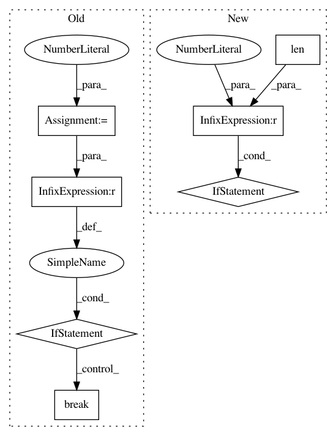

70377c624fdc514cd5897985c67c922cba613c1d,foreman/data_refinery_foreman/surveyor/transcriptome_index.py,TranscriptomeIndexSurveyor,discover_species,#TranscriptomeIndexSurveyor#,259
Before Change
survey_job=self.survey_job.id)
break
species_surveyed = 0
all_new_species = []
for species in specieses:
if number_of_organisms != -1 and species_surveyed >= number_of_organisms:
break
all_new_species.append(self._generate_files(species))
species_surveyed += 1
return all_new_species
After Change
for species in specieses:
all_new_species.append(self._generate_files(species))
if len(all_new_species) == 0:
logger.error("Unable to find any species!",
ensembl_division=ensembl_division,
organism_name=organism_name)
return all_new_species
In pattern: SUPERPATTERN
Frequency: 3
Non-data size: 7
Instances
Project Name: AlexsLemonade/refinebio
Commit Name: 70377c624fdc514cd5897985c67c922cba613c1d
Time: 2018-08-27
Author: kurt.wheeler91@gmail.com
File Name: foreman/data_refinery_foreman/surveyor/transcriptome_index.py
Class Name: TranscriptomeIndexSurveyor
Method Name: discover_species
Project Name: scikit-learn-contrib/DESlib
Commit Name: 7704337b2f1ef68952848b1e622e62497e0fe0b8
Time: 2017-12-27
Author: rafaelmenelau@gmail.com
File Name: pythonds/dcs/a_posteriori.py
Class Name: APosteriori
Method Name: estimate_competence
Project Name: kmike/pymorphy2
Commit Name: 837b2efde71507b09033c3ea6f2502e2306f8eef
Time: 2013-02-18
Author: kmike84@gmail.com
File Name: pymorphy2/analyzer.py
Class Name: MorphAnalyzer
Method Name: _parse_as_word_with_known_suffix